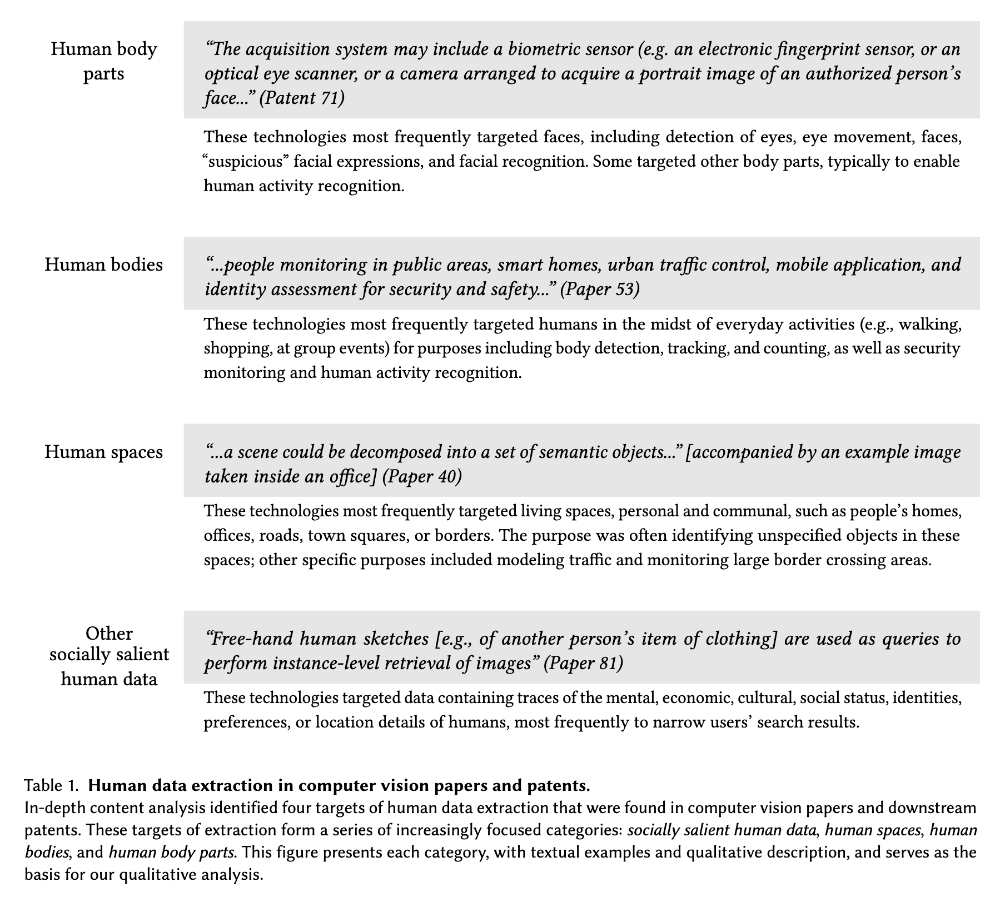

The Surveillance AI Pipeline
Abstract
A rapidly growing number of voices argue that AI research, and computer vision in particular, is powering mass surveillance. Yet the direct path from computer vision research to surveillance has remained obscured and difficult to assess. Here, we reveal the Surveillance AI pipeline by analyzing three decades of computer vision research papers and downstream patents, more than 40,000 documents. We find the large majority of annotated computer vision papers and patents self-report their technology enables extracting data about humans. Moreover, the majority of these technologies specifically enable extracting data about human bodies and body parts. We present both quantitative and rich qualitative analysis illuminating these practices of human data extraction. Studying the roots of this pipeline, we find that institutions that prolifically produce computer vision research, namely elite universities and “big tech” corporations, are subsequently cited in thousands of surveillance patents. Further, we find consistent evidence against the narrative that only these few rogue entities are contributing to surveillance. Rather, we expose the fieldwide norm that when an institution, nation, or subfield authors computer vision papers with downstream patents, the majority of these papers are used in surveillance patents. In total, we find the number of papers with downstream surveillance patents increased more than five-fold between the 1990s and the 2010s, with computer vision research now having been used in more than 11,000 surveillance patents. Finally, in addition to the high levels of surveillance we find documented in computer vision papers and patents, we unearth pervasive patterns of documents using language that obfuscates the extent of surveillance. Our analysis reveals the pipeline by which computer vision research has powered the ongoing expansion of surveillance.

We find substantial evidence against the narrative of only a few rogue entities contributing to surveillance. Rather, we identify a pervasive norm: when an institution or nation authors computer vision papers with downstream patents, the majority are used in surveillance patents. (Figure 4 bottom, institutions’ and nations’ vertical grey bars are consistently above the orange 50% threshold.) This norm describes the behavior of 74% of institutions and 83% of nations, evidencing the wide-spanning normalization of computer vision used in surveillance. Similarly, we find substantial evidence against the narrative that there are merely a few implicated subfields of computer vision within a broader non-surveillance-oriented field. Rather, we find the continuation of the norm: when a subfield produces computer vision papers with downstream patents, the majority are used in surveillance patents. (p. 9)
Our findings indicate that, across institutions, nations, and subfields, the practice of producing computer vision that enables surveillance is a pervasive fieldwide norm. (p. 9)
Many papers conflate humans with objects, making no note of how performing tasks like detection or segmentation on people has extremely specific, and socially consequential impacts. (p. 10)
Considering humans as objects implies that any knowledge produced related to object-focused tasks can be directly applied to human data. This assumption neatly abstracts away the ways that such methods can be applied to surveillance. This phenomenon also ties to literature about traditional science’s sharp divide between subject and object, which positions scientists as the studiers of “objects” out there. This “splitting of subject and object” facilitates “denial of responsibility and critical inquiry” [41]. This contextualizes the field’s homogenization of all possible data, including human data, into objects to be studied, often without consent and without consideration of their sources or consequences. (p. 10)
The studies presented in this paper ultimately reveal that the field of computer vision is not merely a neutral pursuit of knowledge; it is a foundational layer for a paradigm of surveillance. Our findings include these striking points: 90% of papers and patents emphasize it as a strength that their technologies can target human data. Not only is human data broadly targeted, but the majority (68%) of papers and patents explicitly focus on surveillance of human body parts (e.g., faces) and human bodies. Between the 1990s and 2010s, we have seen the rise of Surveillance AI, and it has become an overwhelming norm that computer vision papers analyze humans, and those papers used in patents are most likely used in surveillance patents. Moreover, even when a paper does not explicitly state surveillance as an application, it provides the methods to do so and is grounded in a historical context that makes it possible to target human surveillance while minimizing the acknowledgement of these intentions. (p. 11)
Scientific findings are frequently falsely presented as facts that emerge from an objective “view from nowhere”, in a historical, cultural, and contextual vacuum. Such views of science as “value-free” and “neutral” have been debunked by a variety of scholarships, from philosophy of science, STS and feminist and decolonial studies. A purported view from nowhere is always a view from somewhere and usually a view from those with the greatest power [41, 42, 46, 62]. Social and cultural histories and norms, funding priorities, academic trends, researcher objectives, and research incentives, for example, all inevitably constrain and shape the direction and production of scientific knowledge [8, 17, 32, 33]. An assemblage of social forces have shaped computer vision, resulting in a field that now fuels the mass production of Surveillance AI. (p. 11)
@misc{Kalluri_Agnew_Cheng_Owens_Soldaini_Birhane_2023, title={The Surveillance AI Pipeline}, url={[https://arxiv.org/abs/2309.15084v2](https://arxiv.org/abs/2309.15084v2)}, abstractNote={A rapidly growing number of voices argue that AI research, and computer vision in particular, is powering mass surveillance. Yet the direct path from computer vision research to surveillance has remained obscured and difficult to assess. Here, we reveal the Surveillance AI pipeline by analyzing three decades of computer vision research papers and downstream patents, more than 40,000 documents. We find the large majority of annotated computer vision papers and patents self-report their technology enables extracting data about humans. Moreover, the majority of these technologies specifically enable extracting data about human bodies and body parts. We present both quantitative and rich qualitative analysis illuminating these practices of human data extraction. Studying the roots of this pipeline, we find that institutions that prolifically produce computer vision research, namely elite universities and “big tech” corporations, are subsequently cited in thousands of surveillance patents. Further, we find consistent evidence against the narrative that only these few rogue entities are contributing to surveillance. Rather, we expose the fieldwide norm that when an institution, nation, or subfield authors computer vision papers with downstream patents, the majority of these papers are used in surveillance patents. In total, we find the number of papers with downstream surveillance patents increased more than five-fold between the 1990s and the 2010s, with computer vision research now having been used in more than 11,000 surveillance patents. Finally, in addition to the high levels of surveillance we find documented in computer vision papers and patents, we unearth pervasive patterns of documents using language that obfuscates the extent of surveillance. Our analysis reveals the pipeline by which computer vision research has powered the ongoing expansion of surveillance.}, note={{"size": 3273321, “pages”: 23, “previous”: " "}}, journal={arXiv.org}, author={Kalluri, Pratyusha Ria and Agnew, William and Cheng, Myra and Owens, Kentrell and Soldaini, Luca and Birhane, Abeba}, year={2023}, month=sep, language={en} }